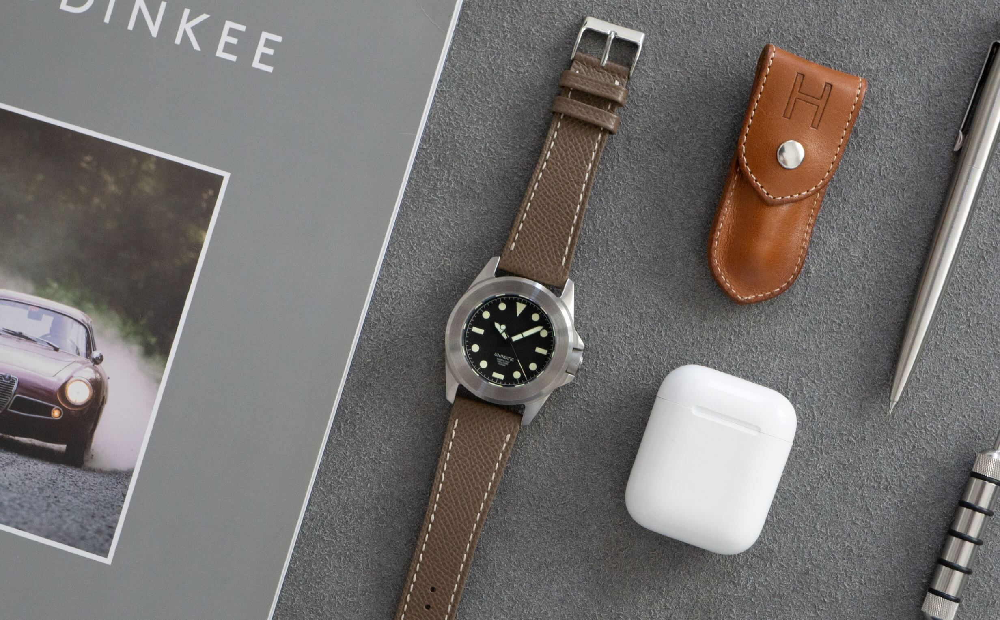
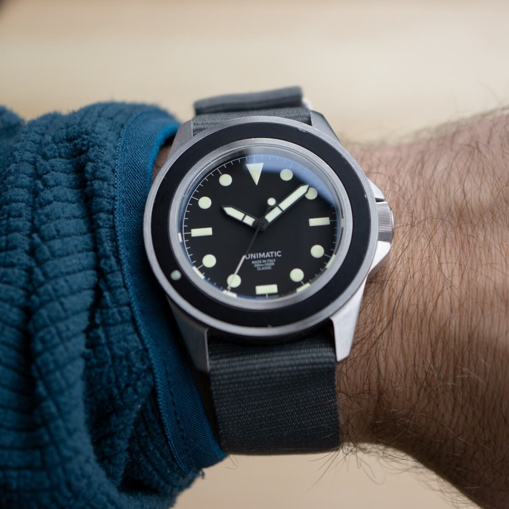
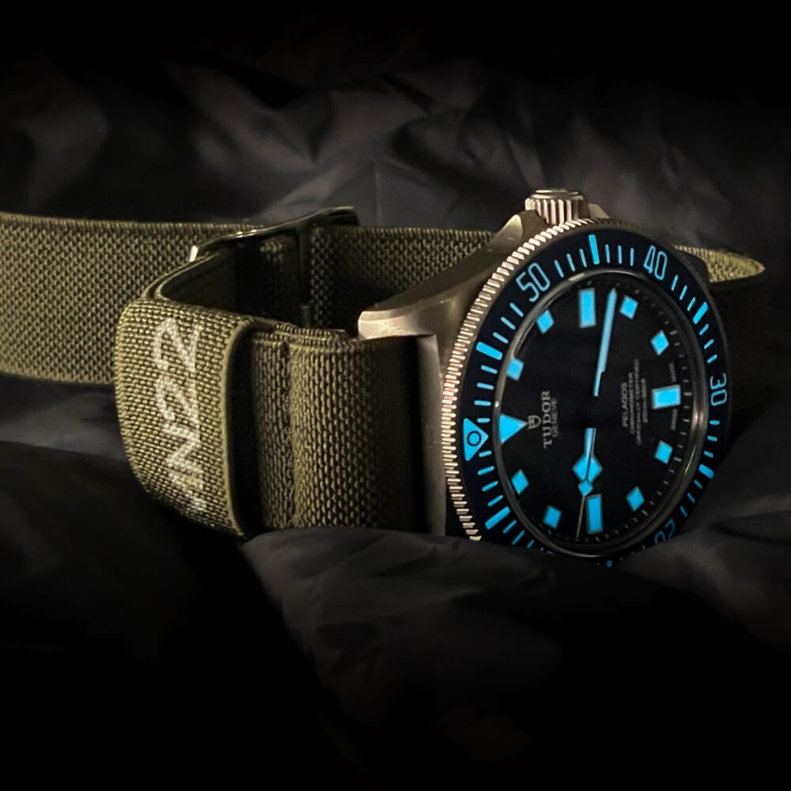
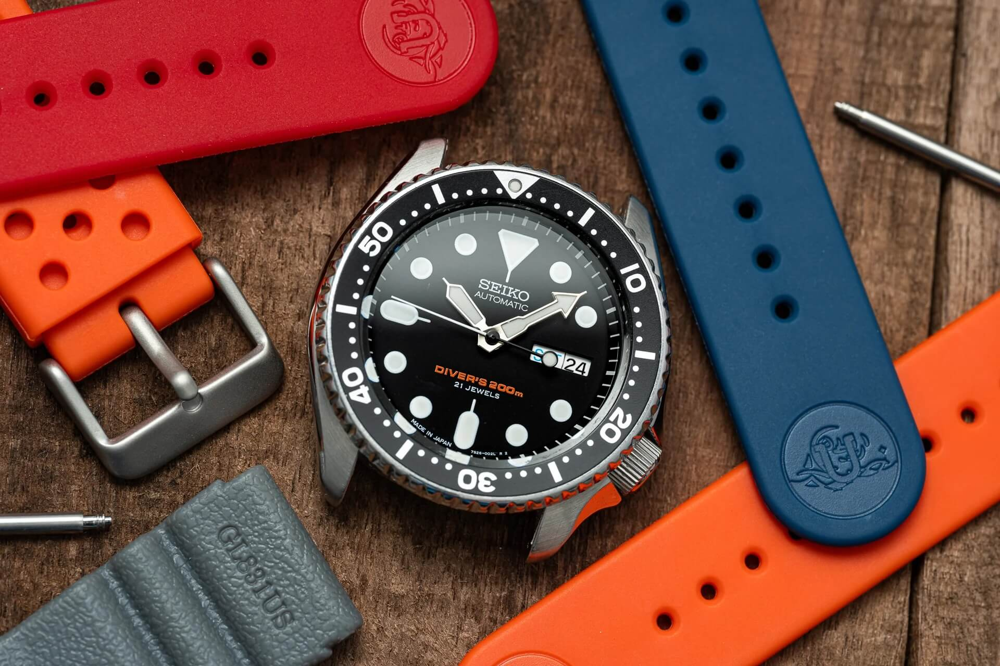
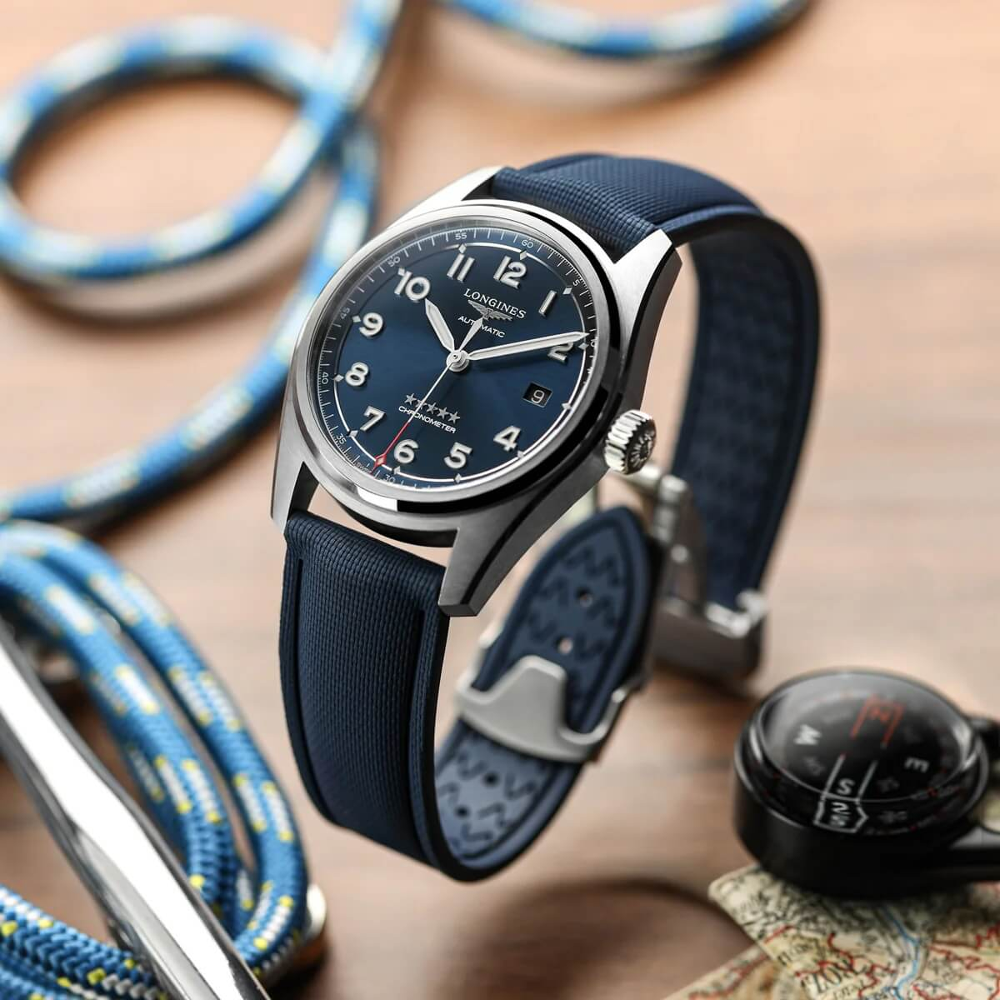

What People Actually Search For When They Shop for Watch Straps: Four Years of Data
We spend a lot of time arguing about which strap is best. Alligator versus calfskin. NATO versus hook-and-loop. Rubber versus the bracelet that came with your watch. So we did something different and pulled four years of search data on roughly 6,900 strap keywords. The answers reshape a few assumptions.
 Nenad Pantelic • June 22, 2026
Nenad Pantelic • June 22, 2026

NATO straps have plateaued. Zulu is in free-fall. Leather is the runaway winner and it isn't close. Canvas and sailcloth are quietly having a moment. And the entire strap world has a clear center of gravity at 20mm, as that is a dominant width people are searching for.
This is what four years of strap-shopping behavior looks like, and what it might mean for the upcoming years.
How We Looked at This
A quick note on methodology before the fun part.
The dataset is keyword search volume: what people type into search engines when they're hunting for a strap. We pulled 6,884 unique keywords containing strap-, band-, or bracelet-related terms, along with their average monthly search volume for each of the 48 months between June 2022 and May 2026. Total combined volume across the dataset: roughly 1.74 million searches per month.
We then bucketed every keyword by material and width using pattern matching, working from most specific to most generic. So "alligator leather strap 20mm" lands in Alligator and the 20mm bucket. "Watch strap" with no material or width specified lands in a generic bucket, which turns out to be most of the data.
That last point is worth pausing on. About 58% of all strap search volume is material-agnostic, made up of queries like "watch strap," "watch band," "rolex band," "seiko watch strap." People don't specify what they want; they search for the category and then browse. Only the remaining 42% (about 735,000 monthly searches) tell us what specific material the searcher had in mind.
One caveat: search volume is not sales. A high-volume keyword tells you what people are curious about, not what they're buying. But for measuring interest and trend direction in a market without good public sales data, search volume is the best proxy we have. And four years is enough time to separate signal from seasonal noise.
The Big Six (and Where They're Going)
Material-specific strap searches break down into six categories that matter and a long tail of niches. Here is the leaderboard.
| Material | Avg Monthly | Share | YoY | 4-Year |
| Leather (all types) | ~308,000 | 42% | +19% | +41% |
| NATO / Pass-through | ~128,000 | 17% | +3% | –11% |
| Rubber / Silicone | ~118,000 | 16% | +4% | +19% |
| Metal / Stainless | ~77,000 | 10% | +2% | +25% |
| Canvas | ~41,000 | 6% | +22% | +34% |
| Everything else | ~63,000 | 9% | mixed | mixed |
Average monthly search volume by material category, 2022–2026 combined
Five things jump out. Leather is enormous and growing fast. NATO is large but stalled. Rubber is steady. Metal is quietly growing. Canvas is the dark horse. Let's take them one at a time.
Leather Straps
Leather is the runaway leader of the strap world, and the gap is bigger than most enthusiasts realize.
When you combine generic leather searches with specific leather varieties (calfskin, suede, alligator, crocodile, lizard, ostrich, the more obscure stuff), the total comes to about 308,000 average monthly searches. That's roughly 17% of all strap-related volume and 42% of all material-specific volume. To put that in perspective: leather alone draws more search interest than NATO, rubber, and metal combined.
And it's growing. Generic leather searches are up +19% year-over-year and +41% over the four-year window. This isn't a category coasting on legacy demand. It's actively expanding.

A few interesting wrinkles inside the leather bucket. Specific leather varieties barely register in search volume. Shell Cordovan, Buttero, Pueblo, Epsom, Goatskin, Pigskin, all terms beloved on Straphunter and forums like ours, produce essentially zero search volume. Saffiano scrapes 180 monthly. Chromexcel: 50. The audience for these materials exists, but it doesn't search for them by name. It learns about them inside enthusiast communities and buys directly from known makers.
Exotic leathers are small but stable. Alligator and crocodile combined pull about 10,700 monthly searches. That's not big, but it's a sustained, premium-intent slice of the market. Lizard is up sharply but on a tiny base. Suede is a quiet 3,900 monthly: small, steady, mostly tied to dress and vintage looks.
The takeaway: leather isn't just winning, it's getting more established as the default strap material.
Leather strap searches per month, June 2022 – May 2026
NATO, Nylon, Pass-Through Straps
For most of the 2010s, NATO straps were the strap conversation. Every microbrand had a NATO-friendly aesthetic. Every YouTuber had a strap-of-the-day video or their own strap brand.
The data says that era ended.
Combined NATO, single-pass, and pass-through searches total about 128,000 monthly, still the second-largest material bucket. But the trend lines are flat to slightly down:
| NATO / Pass-through | Value |
| YoY change | +2.4% |
| 4-year change | –11.4% |
| 3-month change | +4.2% |
Year-over-year is barely positive. Long-term is down. The category is roughly flat in 2026, after being meaningfully larger in 2022. That's a category that peaked and plateaued, not one that's growing.

This doesn't mean NATO is dead. 128,000 searches a month is enormous. It just means the saturation point has been reached. Everyone who wants a NATO has bought one, and the new buyers coming in roughly equal the existing buyers churning out.
NATO / pass-through searches per month, June 2022 – May 2026
Rubber Straps
Rubber's story is almost the opposite of NATO's. Less media attention, but consistent growth across every horizon:
| Rubber / Silicone | Value |
| YoY change | +4.0% |
| 3-month change | +12.2% |
| 4-year change | +18.8% |
About 118,000 monthly searches, 16% of the material-specific market. The recent acceleration in the last three months is notable, suggesting momentum rather than a plateau.
Drivers are easy to identify. Divers are the core audience, and dive watches haven't stopped being popular. FKM rubber has become a known specification, and searchers know to ask for it. The Apple Watch sport band has normalized rubber as an everyday material for people who used to wear leather. Tropic-style straps are having a vintage moment of their own.
Rubber is what NATO was five years ago: a versatile, increasingly mainstream material that's slowly eating share from more traditional options.
Rubber / silicone searches per month, June 2022 – May 2026
Metal & Stainless Steel
About 77,000 monthly searches for metal bands, bracelets, mesh, stainless, oyster-style, jubilee-style, and related terms. YoY is modest at +1.7%, but long-term growth is a real +25.2%.
This tracks with the broader watch market. Enthusiasts and the broader audience like their watches on stainless steel bracelets and they are looking for options. People are searching for "stainless steel watch band," "oyster bracelet replacement," and "jubilee bracelet 20mm" in growing numbers.
Mesh and Milanese specifically is steady, at about 4,100 monthly, +5% YoY.
Metal / stainless steel / bracelet searches per month, June 2022 – May 2026
Canvas & Fabric Straps
Here's the one that surprised us. Canvas (including woven straps, and broader fabric and textile terms) pulls about 41,000 monthly searches. That's the smallest of the big five, but the growth rates are explosive:
| Canvas / Fabric | Value |
| YoY change | +21.9% |
| 4-year change | +34.4% |
| 3-month change | –4.8% |
Both medium- and long-term arrows point sharply up. Sailcloth, a close cousin, is up similarly, at +12.8% YoY and +38.7% long-term.
Canvas isn't a fad anymore. It's the material that the next strap conversation is being built around.
Canvas / sailcloth / fabric searches per month, June 2022 – May 2026
What's on the Way Out
The most interesting numbers in this dataset aren't the winners. They're the losers. Five categories are in clear, measurable decline, and the pattern between them is unmistakable.
| Material | Avg Monthly | YoY | 4-Year | Status |
| Zulu | 9,170 | –47.3% | –41.2% | Collapsing |
| Velcro | 6,610 | –20.9% | –13.9% | Declining |
| Cordura | 510 | –17.1% | –20.3% | Declining |
| Elastic | 3,650 | –5.0% | –17.8% | Slow decline |
| Bronze | 680 | –13.0% | –7.5% | Slow decline |
Zulu is the headline. A 47% year-over-year drop and 41% long-term decline isn't seasonal noise or a measurement artifact. It's a category emptying out. Zulu straps (thicker, beefier NATO variants, often associated with military and tactical aesthetics) were a mid-2010s through early-2020s favorite. The data says that audience has moved on.
Velcro is fading on the same axis. Hook-and-loop straps were tied to G-Shock culture, tactical watches, and the same operator aesthetic that drove Zulu. Down 21% YoY. Not gone, but contracting.
Cordura matches. Ballistic nylon tactical straps. Down 17% YoY, down 20% over four years.
Elastic is the quiet surprise. Marine Nationale-style elastic straps had a strong run from roughly 2019 to 2022. Down 5% YoY and 18% long-term. The wave has broken.

Bronze is more subtle. Bronze cases had a real moment in the late 2010s, and bronze-finished accessories rode along with them. The watches still exist; the search interest in matching straps has cooled.
Step back and look at this list as a group. Every single declining category reads as tactical or military-aesthetic. Zulu, Velcro, Cordura, Bronze. The G-Shock-adjacent, the operator-coded, the field-watch-but-make-it-rugged. All down.
Now look at the growth list: Leather (+19%), Custom/Handmade (+28%), Deployant clasps (+11%), Suede (+3%), Sailcloth (+13%), Canvas (+22%). What do those share? Premium finish. Craftsmanship signaling. Quiet-luxury intent.
The strap market is moving upmarket in taste. Not necessarily in price, but in aesthetic intent. The reader who searches in 2026 is more likely to be thinking "what looks considered" than "what looks rugged." This mirrors what's happening in watches more broadly: the integrated-bracelet sport-luxury moment, the dress-watch revival, the smaller-watch counter-trend. It's all the same cultural shift visible in search data.
The Width That Won
Material is half the strap story. The other half is width, and width data turns out to be the most directly actionable part of this entire analysis.
Most searches don't specify a width. About 91% of total search volume comes from queries without a millimeter measurement attached. But for the 9% that do (roughly 156,000 monthly searches across 1,400+ keywords), the distribution is sharp, and a clear hierarchy emerges.
| Width | Monthly Volume | Share of Width-Specific | YoY | 4-Year |
| 20mm | 52,530 | 33.5% | +28.0% | +46.1% |
| 22mm | 37,190 | 23.7% | +13.2% | +40.0% |
| 18mm | 18,370 | 11.7% | +27.3% | +57.9% |
| 24mm | 11,680 | 7.5% | +1.5% | +7.4% |
| 21mm | 7,080 | 4.5% | –12.8% | –8.2% |
| 19mm | 5,710 | 3.6% | –12.8% | –8.2% |
| Other widths | 24,050 | 15.4% | –5.5% | –1.7% |
Average monthly searches by strap width, 2022–2026 combined
Three widths (20mm, 22mm, and 18mm) account for about 69% of all width-specific search volume. Everything else fights over the remaining third.
20mm: The Universal Default
20mm is the gravitational center of the strap world. Submariner. Speedmaster, Black Bay... Most 38–40mm dress and sport watches. The default lug width of the dominant Swiss and Japanese watch families means 20mm is what most enthusiasts shop for most of the time.
The numbers are emphatic: 33.5% of width-specific market share, +28% YoY growth, +46% growth over four years. This is the single biggest and fastest-growing width-specific market segment in the entire dataset.
What people search for at 20mm is the most generic version of the strap query: "20mm watch band," "20mm watch strap," "20mm watch bracelet." They're not specifying material first. They're specifying width, then browsing. Which makes sense: at 20mm, you have more options than at any other width, so width is the meaningful filter, not material.
22mm: The Tool-Watch Width
22mm is the second-largest width segment at 23.7% share and 37,190 monthly searches. Healthy growth: +13% YoY, +40% long-term.
But the more interesting fact about 22mm is the material mix. It's the only major width where rubber outsells leather by a meaningful margin. At 22mm, rubber/silicone draws 5,810 monthly searches against leather's 4,280. Every other width inverts that ratio.
That's a clean signal about who the 22mm buyer is. Seiko Turtle, Samurai, and Monster collectors, Unimatic owners... (I had to put them here, my fav big watch brand). Generic 42–44mm divers. Pilot watches in the 42mm range. These are tool-watch and sport-watch people, and they buy rubber straps to match the watches they wear. Leather is a secondary option, not the default.

18mm: Probably The Vintage & Guiet Luxury Buyers
18mm is the smallest of the big three and the most interesting growth story. Only 18,370 monthly searches, half of 22mm's volume. But it's the fastest long-term grower of any width, up +57.9% over four years, plus +27% YoY.
Why? Vintage Rolex (many older Submariners, Datejusts, and Day-Dates use 19mm or 20mm lugs but the 18mm overlap is large). Women's watches. Dress watches in the 34–36mm case range. And the broader cultural counter-trend toward smaller watches, with the "watches are too big" pushback that's been building since roughly 2021, has produced more 36mm and 38mm pieces, many with 18mm lugs.
Leather dominates 18mm searches, at about 25% of the bucket. That's a clean read: 18mm buyers are dress and vintage enthusiasts, and they want leather.
24mm: The Big Watch Territory
About 11,680 monthly searches, mostly flat year-over-year (+1.5%). The material mix at 24mm is unusual: bracelets and metal lead at 1,690 monthly, ahead of rubber and leather. That tells you exactly who's searching: Panerai owners, Seiko Tuna and oversized-diver collectors, people swapping the bracelet on a 47mm case.
24mm isn't growing fast, but it's not dying either. It's a niche width with a committed, specific audience.
19mm and 21mm: The Middle
These two widths are clearly contracting. Both around 5,000–7,000 monthly volume, both down ~13% YoY, both down ~8% long-term.
These are odd lug widths, used by certain vintage Rolex models, some Tudor pieces, Longines, vintage Cartier, and a handful of microbrands. The market for them isn't growing. As 20mm continues normalizing, this middle gets squeezed harder.
The Intersection of Dimensions and Material
The most useful single insight in this entire analysis is the material-by-width matrix. Width tells you which watch family someone owns. Material tells you what they want that watch to feel like. Together, the cross-section is more diagnostic than either alone.
| Width | Top Material | #2 | #3 |
| 18mm | Leather (4,680) | Metal (2,370) | NATO (1,680) |
| 19mm | Leather (1,150) | Rubber (900) | NATO (850) |
| 20mm | Leather (7,630) | Rubber (4,100) | Metal (3,150) |
| 21mm | Metal (1,300) | NATO (980) | Leather (970) |
| 22mm | Rubber (5,810) | Leather (4,280) | Metal (3,260) |
| 24mm | Metal (1,690) | Rubber (840) | Leather (760) |
Read across the rows and the picture is clear.
At 18mm, you're shopping for a dress or vintage watch. Leather is the dominant search by a 2-to-1 margin. The customer here is putting a strap on a 34mm Datejust, a vintage Tudor, or a smaller modern dress piece.
At 20mm, you might be shopping for anything. This is the only width where the top three materials are within striking distance of each other. Leather leads, but rubber and metal are right there. It looks like that every category of watch buyer ends up at 20mm eventually. The material distribution reflects all of them.
At 22mm, you're shopping for a tool watch. Rubber leads. This is the one width where the diver and sport-watch DNA shows up clearly in search behavior. If you're selling 22mm straps, lead with rubber.
What To Actually Do With Any Of This
Three thousand words of analysis is fine, but you readers come to StrapHunter for insights. Here's the data translated into actual predictions.
1. Canvas and sailcloth straps will be the dominant strap-content topic in 2027. The growth curves are too clean to ignore, and the watch trends (field watches, tool watches, microbrand exploration) are pointing the same direction.
2. NATO will not recover. It will stay large (128,000 monthly searches doesn't disappear), but it will not grow meaningfully. The peak NATO moment was 2018–2022 and we're now in the long plateau.
3. 18mm will continue to outgrow 22mm in percentage terms. The smaller-watch counter-trend has real momentum and 18mm benefits from it directly. 22mm will stay larger in absolute terms but grow more slowly.
4. The exotic and premium leather conversation will stay in forums, not on search engines. Shell Cordovan, Buttero, Pueblo, Epsom: these will continue to drive almost zero direct search volume even as the audience for them remains real. Builders of premium leather straps should think about community presence, not SEO.
5. Rubber will eventually overtake NATO in total monthly searches. Rubber is growing at ~4% YoY against NATO's ~2%, and rubber is closing the gap. The crossover happens somewhere around 2028 if current rates hold.

Bringing It All Together
The watch strap market behaves the same way the watch market does, just on a faster cycle.
Leather is the default and it's getting more fortified, not less. NATO had its decade and the data says that decade has closed. Tool-watch fabrics (canvas, sailcloth, technical materials) are quietly creeping into the conversation. The tactical and military-aesthetic categories are emptying out.
None of this should change what you put on your wrist tomorrow. If you love a Zulu, wear the Zulu. Search data doesn't grade taste, and the worst thing that can happen to an enthusiast hobby is letting market data dictate personal style.
The strap market in 2026 is bigger, more dynamic, and more interesting than the forum threads suggest. And the strap that was cool four years ago isn't always the strap that's cool now. Sometimes it's leather, sometimes it's canvas, occasionally it's something we haven't even classified yet. Deployant FKM rubber, maybe?
We'll keep watching the numbers. If the trends shift (if NATO surges back, if canvas plateaus, if some material we haven't bucketed yet starts appearing in the data), you'll read about it here first.